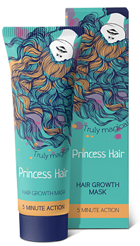
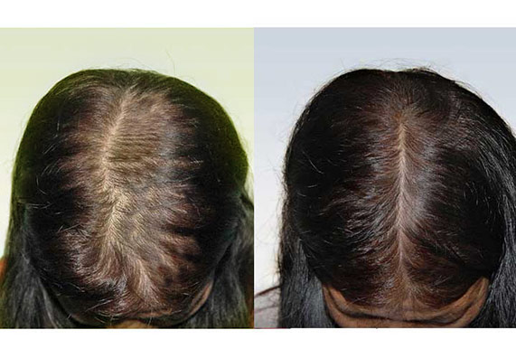
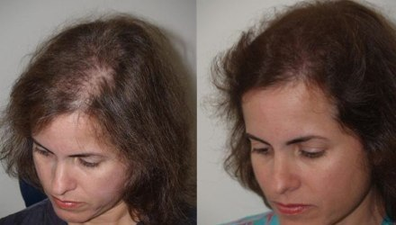
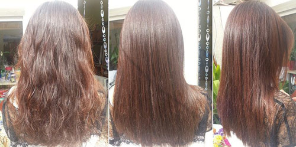
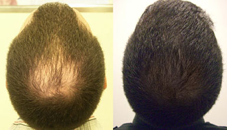
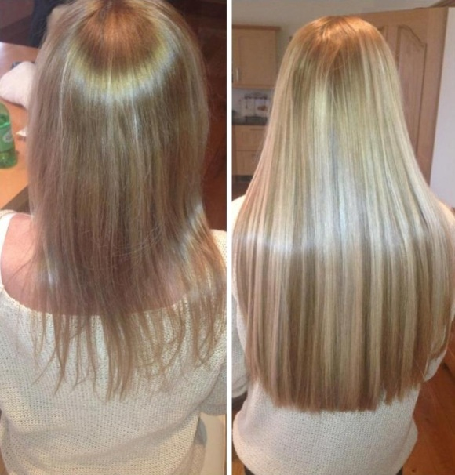

Лента постов:
Блоггеры онлайн:


@naydenish
Екатерина Найденыш
Густые и шелковистые — я решила проблему выпадения волос всего за
1 неделю!
Волосы полностью восстановились за 2 месяца
личный микроблог
Здравствуйте, дорогие!
Хочу поделиться с вами своим решением щекотливой для женщин проблемы выпадения волос. Многие не обращают внимание на то, что волосы остаются на расчёске, в ванной после мытья головы или на подушке во время сна. До тех пор пока это не станет КАТАСТРОФОЙ. Никогда не думала, что в 28 лет меня коснётся такая беда. Волосы выпадали незаметно, и казалось, поводов для беспокойства не было – врачи говорят, что в день человек теряет до 200 волос, и это нормально... Пока в один ужасный день я не заметила ЗАЛЫСИНЫ. Вот тогда я забила тревогу! Волосопад не прекращался ни от использования дорогих шампуней, разрекламированных массажей и даже разрекламированных “инъекций красоты”. День ото дня проблема усугублялась, и однажды наступил момент, когда в самом центре головы красовалась самая настоящая ЛЫСИНА.
Смотрите сами, вот что было у меня на голове примерно 2 месяца назад (может быть, чуть больше):
Для женщины это действительно катастрофа
Почти все мужчины сталкиваются с проблемой облысения, и для них не составляет труда побриться “под ноль” и стать при этом ещё мужественнее. Кто ж не любит брутальных самцов? Но женщинам такой способ не подходит. Мужчины любят нас за женственность и красоту. Испокон веков длинноволосые красавицы считались эталоном жены и матери. Сегодня ухоженная шевелюра играет не меньшую роль – длинные густые волосы это невероятно модно и сексуально. Конечно я, со своей лысиной, стала полным антиподом сексуальности, выглядела смертельно больной и уставшей от жизни женщиной. Нервы сдавали, я почти перестала выходить из дома и ужасно стеснялась своей проблемы. Дошло даже до того, что я взяла отпуск за свой счет, потому что мне было стыдно смотреть коллегам в глаза. Мне всего 28 лет, но в тот момент я перестала вовсе чувствовать себя женщиной, и потеряла вкус к жизни. Муж уверял, что всё в порядке, что он любит меня любую... Но я чувствовала, что он охладел ко мне, и видела его глазах лишь немой укор и сочувствие. За все то время я прошла все круги ада. Земля уходила из под ног, и казалось, что жизнь закончилась.
Чего я только не перепробовала
Естественно, я пыталась справиться с проблемой тем, что попадалось на глаза. Раздумывать времени не было. Была проблема — и ее нужно было решать. И вы даже не представляете, сколько я всего перепробовала. Вот примерный список:
— шампуни (покупались в неограниченном количестве, разных марок и ценовых категорий, пользовалась, как и полагается, по инструкции, но эффекта не было, даже краткосрочного) — НЕ РАБОТАЕТ!
— маски и лосьоны (тоже покупались в неограниченном количестве, использовались как по отдельности, так и в комплексе, волосы стали мягче, но выпадать не перестали, увы) — НЕ РАБОТАЕТ!
— таблетки (на приеме у трихолога мне прописали курс таблеток — мол, печень зашлакована, поэтому и волосы теряете. Пропила курс, сдала анализы. Итог: показатели анализов пришли в норму, а волосы по-прежнему выпадали) — НЕ РАБОТАЕТ!
— специальная диета (здесь и говорить нечего, от того, что вы начнете употреблять «правильные продукты», волосы у вас расти не начнут, уж поверьте мне) — НЕ РАБОТАЕТ!
— народные средства (и луковые отвары в корни волос втирала, и репейное масло, и майонез — все. Мне кажется, что стало еще хуже — волосы еще больше поредели) — НЕ РАБОТАЕТ!
— мезотерапия (полный курс, 12 процедур. Очень болезненные уколы, после процедуры несколько дней ужасно чешатся. Цена космическая. Эффекта нет) — НЕ РАБОТАЕТ!
Хоть я не сидела, сложив руки, но найти эффективный метод борьбы с выпадением волос, не смогла. На все средства я возлагала большие надежды, но они не принесли даже минимального результата. Выпадение волос продолжалось, и я начала опасаться, что однажды на моей голове не останется ни единого волоска.
Спасение пришло неожидано
Моя лучшая подруга неплохо разбирается в косметике. Когда я, полностью отчаявшись, решила признаться ей в своей проблеме и поплакаться в жилетку – она рассмеялась. Почему? Оказалось, я по собственной глупости спустила деньги в канализацию. О том, что никакие маски, народные средства и мезотерапия мне не поможет, я и знать не знала. А вот подруга была в курсе, и сказала, что рекламщики развели меня как последнюю дуру. Лоханулась по-крупному, в общем.
Посоветовала она мне только одно – воспользоваться советами бьюти-блогеров, и заказать маску для стимуляции роста волос Princess Hair. Говорит, что весь Интернет про неё трубит, только я не в курсе. И она давно сама уже ей пользуется и проблем с волосами не знает! Что ж это за зверь такой, Princess Hair?
Оказывается, совсем недавно на нашем рынке появились в открытой продаже профессиональные средства для волос, которые умеют решать конкретные проблемы. Но, как и большинство импортных новинок, долгое время маску Princess Hair не пускали на наш рынок, тем более, что наш потребитель привык к дешёвому бесполезному Эльсеву и Пантину, и с профессиональными средствами толком не знаком. Когда, наконец, была доказана её эффективность и безопасность (а маска состоит полностью из натуральных компонентов), Princess Hair поступила в продажу. Но на массовый рынок так пока и не вышла – купить её можно только на официальном сайте производителя. Может, оно и к лучшему.
Говорят, что использование маски Princess Hair позволяет полностью остановить выпадение волос, стимулировать рост новых волосков, и пробудить “спящие” волосяные луковицы. Более того – производитель обещает, что после применения волосы станут быстрее расти, будут гуще, толще и здоровее. Звучит ну оооочень заманчиво! А что по факту?
Уже к концу 2-ой недели постоянного использования маски Princess Hair я вернула волосы в более-менее нормальное состояние!
Серьезно. У меня ведь не только вдоль пробора волосы выпадали, но и локально ближе ко лбу — на самом заметном месте. А тут — оп! — и начала «заростать» моя лысинка.
Я аж расплакалась! Не верилось, но это было правдой. Ей богу, не знаю, что такого фантастического намешано в этом флаконе, но это РЕАЛЬНО РАБОТЕТ!
Не верите? Смотрите сами (разница на фото около 2 месяцев).
Разница очевидная! Наконец-то я перестала закручивать на голове невероятные “бабские” коральки, чтобы прикрыть эту лысину!
И действительно, качество волос заметно улучшилось – они стали гладкими и шелковистыми, появился “пушок” новых волос по всей голове. И вообще, выглядели офигенно! Никогда не думала, что мои волосы могут быть такими красивыми и ухоженными. Теперь я понимаю, почему бьюти-блогеры так гудят насчёт профсредств и маски Princess Hair в частности. Это реально звёздный продукт!
Как пользовалась? Строго по инструкции — наносила маску на кожу головы, надевала сверху шапочку для душа, и заматывала махровым полотенцем. Через час смывала и сушила обычным способом. Ничего суперсложного, а ЭФФЕКТ ПОТРЯСАЮЩИЙ!
Где заказывала? На сайте производителя. Насколько я знаю, только они поставляют оригинал, который можно проверить по кодам на упаковке.
Вот, собственно, и весь рассказ.
Моему счастью нет предела, я снова чувствую себя женщиной! И отражение в зеркале радует, как никогда!
Кстати, моей маме тоже помогло. Так что нас уже двое! Вот ее результат:
Надеюсь, я была вам полезна! Хочется верить, что мой опыт поможет девушкам, которые столкнулись с проблемой выпадения волос, вернуть красоту и радость жизни!
П.С. Если вы сталкивались с такой бедой, поделитесь в комментариях своими историями.
Комментарии:
Это вы, Катенька, зря не следите за новинками в мире косметологии! Могли бы предотвратить беду, а не доводить волосы до такого катастрофического состояния. А подруга молодец! Я тоже знаю о об этой маске, и нежно её люблю. Мои волосы мне благодарны:

О, у меня такая же беда... Пока лысины нет, но на висках уже кожа светится, да и пробор слишком заметен. Очень страшно за свои волосюшки ((( Спасибо за откровение! Мне актуально.
С удовольствием читаю твой блог, и никогда бы не подумала, что в твоей жизни случилась такая беда... Написала бы пост сразу – пока проблема лишь намечалась, мы бы подсказали! Я об этой масочке узнала ещё лет пять назад, когда достать её можно было лишь через знакомых в парикмахерских кругах. Тоже раньше волосы сыпались! А сейчас, отрастила гриву на славу))
Девчат, и у меня отличный результат с этим маской. Тоже многое пробовала – как мертвому припарка. Princess Hair помогла буквально за месяц:
Согласна, волосы она лечит здоровски! как раз в этой статье и прочитала о маске. у меня химия была неудачная, предупреждали, что это вредно, но я вроде щадящую делала у хорошего мастера. все равно волосы стали как "перекатиполе". Месяц пользуюсь этой маской, волосы - блеск! отрасли см на 5, прям, захимиченные практически от новых не отличить!
Звучит заманчиво, тоже хочу заказать теперь. У меня вроде никаких лысин нет, но на расчёске постоянно куча волос остаётся. Не думаю, что это норма.
Мы мужу такую маску заказывали, но у другого производителя, кучу денег отдали. Но это давно было, сейчас, я смотрю, цена более чем доступная. Но, сказать честно, за такой результат никаких денег не жалко!

Хочу для дочки это маску заказать – уже 13 лет нам, а волосы еле растут, жиденькие... Мышиный хвостик, как говорится. Читала, что ограничений по возрасту нет. Будем пробовать.
Ой, я как перекрасилась из чёрного (три смывки, осветление блондораном и потом окрашивание), так волос совсем не осталось. На голове солома, после каждого мытья полная ванна волос. Обламываются, прям у корней. Уже сама думала, что проще побриться. Но жалко же! Случайно, спасибо господу богу, наткнулась на обсуждение Princess Hair, решила рискнуть попробовать. Чудеса случаются! Не быстро – за два месяца, но волосы пришли в идеальное состояние. Никаких секущихся концов, гладкие, увлажнённые, а в ванной – ни волосинки! Рекомендую!

Два месяца – это супер результат! Я годами борюсь с выпадением и толку ноль. Тоже теперь заказала маску и себе! Жаль, раньше ничегошеньки о ней не слышала. Я тоже “деревня” непродвинутая, Пантином пользовалась всегда)))